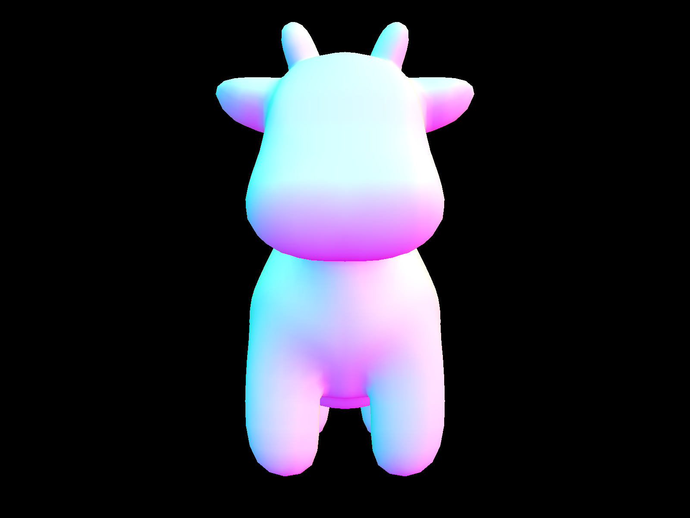
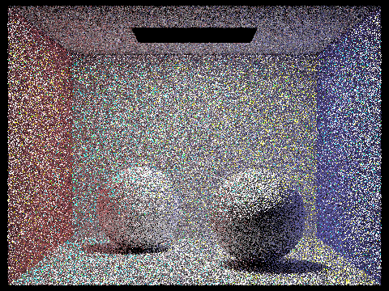

|
|
|
In this project we applied the physics of light in order to render more realistically lit images! We started off with some basic ideas about light. We know that light travels in straight lines, does not interfere with each other, and travel from a light source to the eye. We also learned about bounding box heirarchy and different ways to sample light in order to reduce noise and create the most realistic image possible.
I really enjoyed how this project integrated physics with computer science. As an astrophysics major I've had to take a lot of physics courses and learn about these properties of light and flux and radiance and such, so it was really fun to learn how to computationally mimic real life.
To generate a ray we first have to consider the number of camera ray samples we want to create. If we are only taking one sample, we only have to cast one ray through the center of the pixel and return the radiance of that ray using est_radiance_global_illumination().
Otherwise, we randomly sample num_samples of points, cast rays through those points, and finally return the average radiance. We can obtain a random sample point (s, t) using gridSampler->get_sample(), where s = sample.x and t = sample.y. Now we can cast a ray through the pixel at our sample point, find its radiance, and repeat this num_samples times before returning the average of these radiances.
To actually generate a camera ray we must find the origin and direction of the ray. Camera::generate_ray() takes in a 2D point scaled down from integer coordinates to [0, 1]^2 through which we are casting the ray. Since the camera has its own coordinate system, the first step is to convert our x and y values in world space to xcam and ycam in camera space. We know that the top right and bottom left corner of the camera’s field of view can be expressed as
Vector3D(tan(radians(hFov)*0.5, tan(radians(vFov)*0.5), -1)and
Vector3D(-tan(radians(hFov)*0.5, -tan(radians(vFov)*0.5), -1)
respectively, where hFov and vFov are the two field of view angles.
Since the x and y values of the top right corner give us half the length and height of the entire boundary sensor plane, we can scale our world points to camera coordinates and then offset them so that (0, 0) maps to the bottom left and (1, 1) maps to the top right.
xcam = (x * (2 * topRight.x)) - topRight.x;
ycam = (y * (2 * topRight.y)) - topRight.y;
Vector3D(xcam, ycam, -1) is our ray’s direction in camera space. To find the vector’s direction in world space we apply the transformation matrix c2w. Now we can create a ray with the origin as the camera’s position (pos) and the normalization of the world space direction.
Primitive Intersection Parts
Ray intersection for both 2D and 3D primitives are fundamentally similar in that we start off with the equation for the primitive, the equation for a ray, and then solve for intersection.
Intersecting Spheres
We know the equation for a ray and the equation of a sphere.
To solve for the time of intersection we set p = r(t) and solve for t using the quadratic formula.
Note that you must check you do not get any imaginary solutions from the quadratic formula.
Intersecting Triangles & The Triangle Intersection Algorithm
Triangle intersection is a little more complicated - that’s where the Moller Trumbore Algorithm comes in. It starts out similarly to sphere intersection, with the equation of a ray.
We also have the barycentric equation of a triangle.
b1 and b2 are barycentric coordinates and P0, P1, and P2 correspond to the three points of a triangle. Likewise to intersecting a sphere we set r(t) equal to the triangle equation and solve for t.
(1 - b1 - b2)P0 + b1P1 + b2P2 = o + td
P0 - b1P0 - b2P0 + b1P1 + b2P2 = o + td
-td + (P1 - P0)b1 + (P2 - P0)b2 = o - P0
We end up with a system of equations Mx = b
[ -d (P1 - P0) (P2 - P0) ] * [t b1 b2]^T = o - P0
Cramer’s rule says that linear equations Mx = b can be solved using the determinants of matrices.
Where Mi is the matrix M with its i-th column replaced by b.
We can also use the fact that
to finally get
After solving for t, b1, and b2 using the algorithm, we can test if our given ray ( r ) intersects the triangle. To test the time of intersection’s validity, check if r.min_t <= t <= r.max_t. To check the barycentric coordinates, make sure that b1 and b2 are both in between 0 and 1, and that their sum b1 + b2 <= 1. If both of these checks are passed, we update the r.max_t to t, and fill in the Intersection data.
Here is the normal shading for a few small dae files.

|

|

|
|
BVH Construction Algorithm
I used this recursive function to build my BVH:
1. Loop through all of the primitives in prim and compute their bounding box (bbox) as well as a bounding box for the primitives’ centroids.
2. Initialize a new node using the primitives’ bounding box bbox.
3. Check how many primitives are in the list. If prims.size() <= max_leaf_size, this is a leaf node. Assign the node’s prims to a new vector, initialized with prims. Return the node.
4. If it is not a leaf node (prims.size() > max_leaf_size), we will have to recursively call the function again for the left node and right node. To create the left and right nodes, start off by choosing the axis to split on. We split whichever axis has the largest extent.
5. Now we can sort the primitives into two new vectors (right and left) depending on where their centroid lies relative to the split point. I chose to split at the average of the centroids of the primitives (centroid_box.centroid()). If the primitive’s centroid is greater than the midpoint for the chosen axis, it is added to the right. Else, it is added to the left.
6. Create the node’s left (l) and right (r) by recursively constructing another bvh, passing in the left and right vectors respectively.
7. Return the node.
***Note: One potential problem is that we could end up with a case where all the primitives lie on one side of the split point and either the right or left primitive vectors ends up empty. If this is the case, we can split which ever primitive vectors is full into two vectors. For example, if the right vector is empty, I did right.push_back(left.back()); left.pop_back(); for half the size of the vector.
BVH Intersection
I follwed these steps to check if a ray intersected the BVH.
1. Check if the ray intersects the bounding box by implementing the following for BBox::intersect()
1.a Calculate the two intersection times for each axis. Make sure to identify which one is the max and min of the two. For example for the x axis, tx1 = (min.x - origin.x) / dir.x and tx2 = (max.x - origin.x) / dir.x
1.b Calculate the minimum and maximum times, tMin and tMax. tMin is the maximum of the minimum times for the x, y and z axes. tMax is the minimum of the maximum times.
1.c If tMin <= tMax and tMax >= 0, the ray intersects the bounding box.
2. If the ray does not intersect the bounding box, it does not intersect the BVH. If it does intersect the bounding box, make sure the times are valid. If tMin > ray.max_t or tMax < ray.min_t, the time’s are not valid and the ray does not intersect, so return false.
3. If the time is valid, check if the node is a leaf. If it is a leaf, loop through all the primitives in the node and determine if the ray intersects any of the primitives. If so, return true, else return false.
If the node is not a leaf, recursively call the function for the node’s left and right nodes. Return true if the ray intersects either of the left and right nodes.
Here is the normal shading for a few large dae files that I couldn't render without the acceleration structure.
|

|

|

|

|
Rendering Speed Experiments
|
|
|
When I tried to render the cow before implementing the BVH, it took 292.57s (almost 5 minutes). After implementing the BVH it only took about 1 second. Making a BVH allows us to check if a ray intersects a selection of primitives. Before we had to test if it intersected every single one. Therefore the implementation of the BVH also changes the average number of intersection tests per ray. Before the BVH, it would on average test for over 3000 intersections for every ray. With the BVH it only tests on average 3 intersections per ray.
Estimate Direct Lighting Hemisphere
In this function we are estimating the light hitting a given intersection (isect) that is directly from a light source. We take samples in a uniform hemisphere around a hit point (hit_p), find the incoming radiance from a light source, convert it into an outgoing radiance, and finally take the average of all the samples.
In order to implement this is we must create a separate function in which we can create the BSDF. Given an outgoing and ingoing direction we can evaluate the BSDF of those two directions by returning the reflectance divided by pi.
The first step in estimating the direct lighting hemisphere is to make a coordinate system for a hit point. That way we can go back and forth between world space and object space. We also have a hit point hit_p and a direction w_out that points towards the source of the rayMake a coordinate system for the hit point using the input intersection normal. This allows us to move from world space to object space and vice versa.
Then we are going to use hemisphereSampler->get_sample() to get a sample direction and transform it to world space by applying the transform o2w. This is a direction inwards from the hit point. Now we can create a ray with this direction wi_world and the origin as (EPS_D * wi_world) + hit point (this offsets the origin). Now we can check if this ray intersects the bvh. If it does, we can get the emitted light (incoming radiance) and multiply it with the emission value of the BSDF and with the z-value of the sample ray's direction vector in order to find the irradiance, or outgoing radiance. We add this to our accumulation of irradiance L_out. We do this process num_samples times and return the average irradiance (L_out / num_samples) divided by the probability density function (in order to apply Monte Carlo integration).
Estimate Direct Lighting Importance
Here we are again estimating the light from an intersection coming directly from a light source, but this time we are sampling only from lights, not uniformly in a hemisphere.
We do the same thing as before and first make a coordinate system for a hit point. That way we can go back and forth between world space and object space. We also have a hit point hit_p and a direction w_out that points towards the source of the rayMake a coordinate system for the hit point using the input intersection normal. This allows us to move from world space to object space and vice versa.
Now, for each light source we are going to check if it is a delta light. If so, we only need to take one sample. Else, we will be taking ns_area_light samples.
Find the incoming radiance, direction from a hit point to the light source, the distance to the light source, and the probability density function using SceneLight::sample_L(). Convert the direction to object space. If the z coordinate is negative, the light is behind the surface and we can disregard it. If not, create a shadow ray. The shadow ray’s origin should be hit_p + (EPS_D * the direction vector) to offset the hit point. If the shadow ray does not intersect the bvh, we calculate the irradiance by multiplying the incoming radiance with the emission from the bsdf material and the cosine term. Accumulate the irradiance divided by the PDF in order to apply Monte Carlo Integration. Repeat this for however many samples we need to take.
Finally we can accumulate the average of the sample irradiances by dividing by however many samples and add this to the total outgoing radiance.
Here are some images rendered with both implementations of the direct lighting function.
|
|
|
|
|
|
Focus on one particular scene (with at least one area light) and compare the noise levels in soft shadows when rendering with 1, 4, 16, and 64 light rays (the -l flag) and 1 sample per pixel (the -s flag) using light sampling, not uniform hemisphere sampling.
|
|
|
|
|
|
Compare the results between using uniform hemisphere sampling and lighting sampling
Uniform hemisphere sampling creates very noisy images because we are sampling uniformly and not taking into consideration where there is more or less light. If we increase the light rays we can reduce noise, but only to some extent. Importance sampling clearly results in less noisy images. This is because we are sampling the area where there are light sources. Similarly, the quality improves as we increase the number of light rays.
Indirect Lighting Function
First we find the light emitted straight from a light source in zero_bounce_radiance(). Then in one_bounce_radiance we can obtain the direct illumination by either hemisphere or importance sampling depending on if direct_hemisphere_sample is true or not. Finally we can implement The indirect lighting function, at_least_one_bounce_radiance()
For now, set the outgoing radiance to the result from calling one_bounce_radiance(). Take a sample at the intersection point. This will provide us with the incoming radiance direction as well as the PDF. Now we can use Russian Roulette to decide whether or not to randomly terminate the loop. The one case where recursion will continue regardless of Russian Roulette is if the depth is equal to 0. If we are not terminating the loop, create a ray with the incoming radiance direction and the origin at the hit point offset by EPS_D * incoming radiance. See if it intersects with the bvh. If so, accumulate the results of the recursive call. If the depth is equal to zero, we must multiply the result of the recursive call by the bsdf and the cosine term, as well as divide by the PDF. Else, we must also divide by the Russian Roulette probability.
Here are some images rendered with global (direct and indirect) illumination using 1024 samples per pixel.

|
|
Here is one scene (CBspheres_lambertian.dae) first with only direct illumination, then only indirect illumination using 1024 samples per pixel.
|
|
|
The image with only direct lighting has harsher lighting, since we are not taking into account the light that is bouncing off. However, the image with only indirect lighting is overall darker, since the direct lighting provides the most intense light.
Here is CBbunny.dae with max_ray_depths at 0, 1, 2, 3, and 100 using 1024 samples per pixel.
|
|
|
|
|
|
|
|
Increasing max_ray_depth increases the number of times light can bounce off of something and therefore causes the scene to be more lit. In the case where max_ray_depth = 0, we only return the zero_bounce light, or the light emitted from the light source, which is why the rest of the scene is black.
Here is CBbunny.dae rendered with 1, 2, 4, 8, 16, 64, and 1024 sample-per-pixel rates and with 4 light rays.
|
|

|
|
|
|
|
|
|
|
|
As we can see, increasing the samples per pixel rate eliminates noise. This makes sense because increasing the sample rate increases the camera rays generated per pixel, and therefore we can get a more accurate average for how the pixel should look.
Adaptive sampling concentrates the samples in order to get rid of noise more efficiently. To implement the algorithm I added to the raytrace_pixel() function. First I accumulated the radiance illuminance as s1 as well as the square of the illuminance as s2. Now we can calculate the mean and variance of all n samples.
However, we don’t need to do this for every new sample. We only need to check every samplesPerBatch pixels. So if the number of samples so far % samplesPerBatch == 0 we can go ahead and calculate the mean, variance, and finally the pixel’s convergence I.
After finding the value for I we can check if it is less tan or equal to the maxTolerance * the mean. If so, we can add the number of samples taken so far (n) to the sampleCountBuffer and return the average total radiance with (total / n). If not, the sampleCountBuffer is equal to the total number of samples (num_samples) and we can return the average radiance with (total / num_samples).
Here is CBbunny.dae rendered with the 2048 samples per pixel, 1 sample per light, and a max ray depth of 5.
|
|
|